NCS Abuja Chapter
About the chapter.
A professional home for the people shaping Nigeria’s information technology ecosystem.
Our story
A national society, connected to Abuja.
The Nigeria Computer Society is the umbrella organization for information technology professionals, interest groups, and stakeholders in Nigeria. Established in 1978 as the Computer Association of Nigeria (COAN) and transformed into NCS in 2002, the Society advances information technology science and practice across the country.
The Abuja Chapter connects that national mission with professionals, public institutions, businesses, academia, and innovators in the Federal Capital Territory.
Open the legacy About page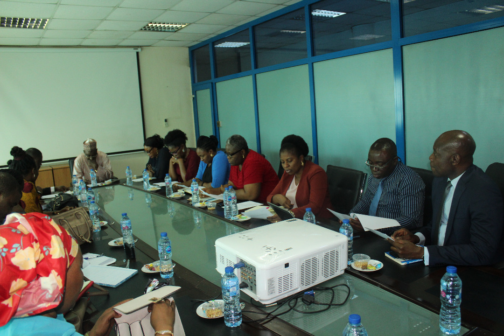
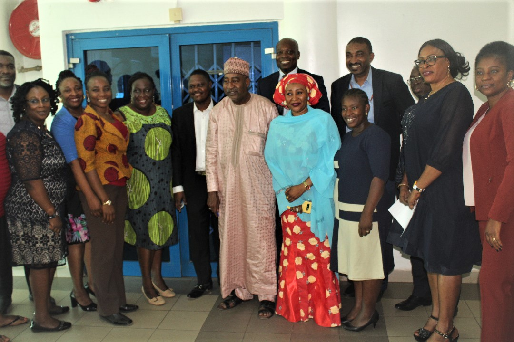
2002Became NCSAdvancement of information technology science and practice, and their deployment as solutions and business enablers across every industry and human endeavour.
- Integrity
- Love
- Transparency
- Honesty
- Education
- Cooperation
- Team work
The people serving the chapter
Leadership & governance.
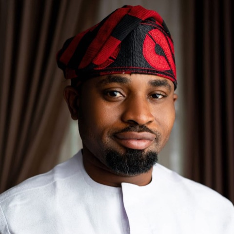
CHAPTER CHAIRMAN
Andrew A. Abu
Chartered technology professional, policy and innovation advocate, and ecosystem builder connecting young people, startups, government, and industry.
Founder of Young Innovators of Nigeria (YIN), former Director of Innovation & Strategy at NCS Abuja (2023–2025), and a Member of the Computer Professionals (Registration) Council of Nigeria (CPN).
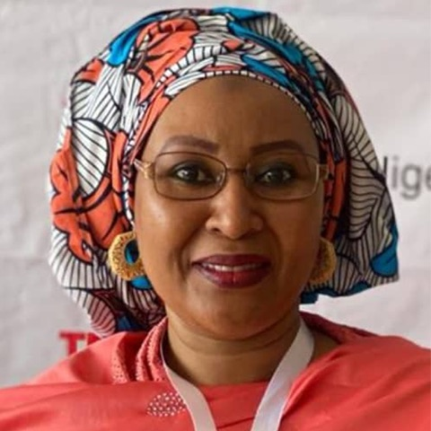
Hauwa YahayaVice-Chairman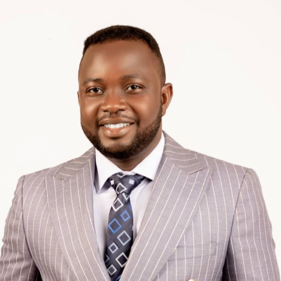
Mayowa AjiboyeGeneral Secretary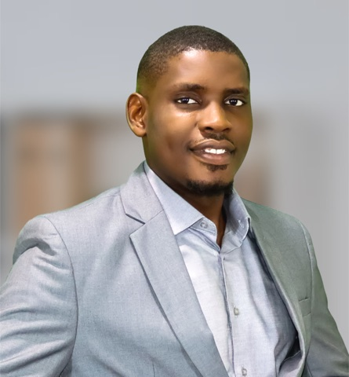
Victor P. IdonorAssistant General Secretary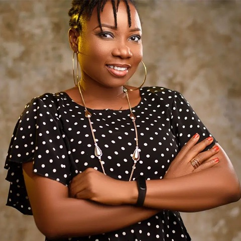
Elizabeth IkyoTreasurer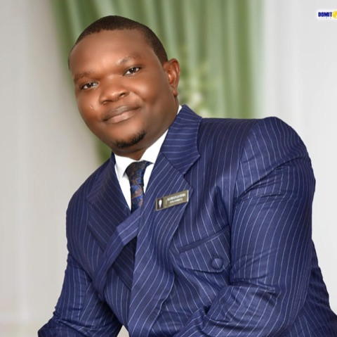
Olusegun Ojo JayeobaPublicity Secretary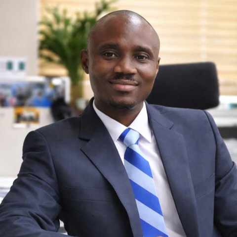
Sanusi Bayonle SaheedFinancial Secretary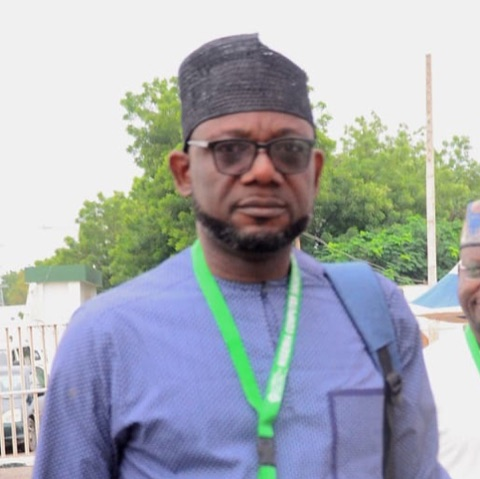
Michael U. OkoroaforDirector, Strategy & Innovation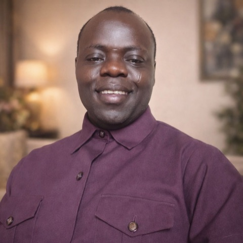
Maurice KelvinDirector, Training & Certifications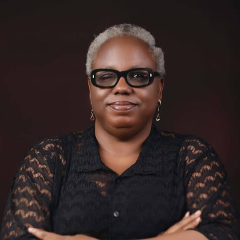
Vera Awoh AkujobiDirector, Events & Mobilization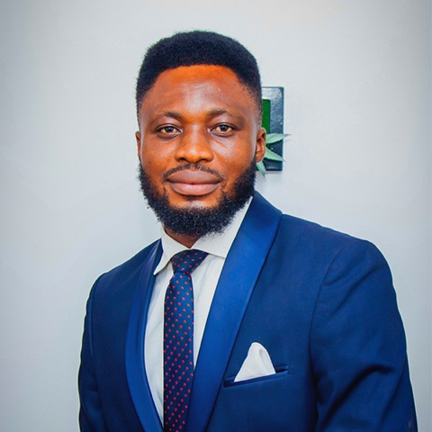
Peter-Praise Effiom AkpanDirector, Membership Drive & Welfare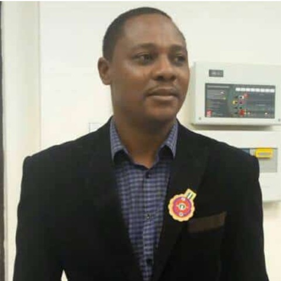
John O. OdumesiImmediate Past Chairman